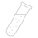
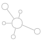
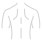
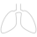

Отделения
- Акушер-гинеколог
 Аллерголог-иммунолог
Аллерголог-иммунолог Гастроэнтеролог
Гастроэнтеролог Дерматовенеролог
Дерматовенеролог- Диетолог
- Инфекционист
- Кардиолог
 Клинический психолог
Клинический психолог Колопроктолог
Колопроктолог- Лаборатория
 ЛОР (Отоларинголог)
ЛОР (Отоларинголог)- Маммолог
 Мануальный терапевт
Мануальный терапевт- Массажист
- Невролог
 Нефролог
Нефролог- Онколог
- Остеопат
- Офтальмолог
- Психиатр
 Процедурный кабинет
Процедурный кабинет- Пульмонолог
- Ревматолог
- Рефлексотерапевт
- Сердечно-сосудистый хирург
 Справки и сертификаты
Справки и сертификаты Терапевт
Терапевт- Травматолог-ортопед
- УЗИ
 Услуги на дому
Услуги на дому- Уролог
- Физиотерапия
- Функциональная диагностика
 Хирург
Хирург Эндокринолог
Эндокринолог
- Акушер-гинеколог
- Аллерголог-иммунолог
- Гастроэнтеролог
- Дерматовенеролог
- Диетолог
- Инфекционист
- Кардиолог
- Клинический психолог
- Колопроктолог
- Лаборатория
- ЛОР (Отоларинголог)
- Мануальный терапевт
- Массажист
- Невролог
- Нефролог
- Онколог
- Остеопат
- Офтальмолог
- Психиатр
- Процедурный кабинет
- Пульмонолог
- Ревматолог
- Рефлексотерапевт
- Сердечно-сосудистый хирург
- Справки и сертификаты
- Терапевт
- Травматолог-ортопед
- УЗИ
- Услуги на дому
- Уролог
- Физиотерапия
- Функциональная диагностика
- Хирург
- Эндокринолог
О наших клиниках
Более 40 лучших врачей разных специальностей и более 20 медицинских сестер с «золотыми руками»
Специалисты
Медицинская помощь для всех членов вашей семьи, независимо от возраста и пола

Cовременное, высокотехнологичное оборудование

Просторные, удобные, современные клиники
Новости
- 03.07.2020
Физиотерапия на дому
Все наши врачи обладают высокой квалификацией и большим опытом, что зачастую является залогом точной постановки диагноза и эффективного лечения.
- 18.06.2020
Жидкий азот – криомассаж для красоты
Для достижения полного понимания и комфорта в сотрудничестве с вами просим вас ознакомиться с разделом сайта «Для пациентов».
- 01.06.2020
У нас безопасно
Мы оказываем медицинскую помощь для всех членов вашей семьи, независимо от возраста и пола.
Наши отделения
- Сейчас открыто
Филиал работает ежедневно с 07:30 до 20:00
Клиника расположена в отдельном 4-х этажном здании на углу ул. Мамина-Сибиряка и ул. Карла Маркса, напротив Екатеринбургского Зоопарка. Вход в клинику расположен в правой части здания. Если вам необходим пандус – он находится в левой части здания.
Забор анализов ежедневно с 07:30. Вакцинация ежедневно.
- Сейчас открыто
Филиал работает ежедневно с 07:30 до 20:00
Клиника расположена в отдельном 4-х этажном здании на углу ул. Мамина-Сибиряка и ул. Карла Маркса, напротив Екатеринбургского Зоопарка. Вход в клинику расположен в правой части здания. Если вам необходим пандус – он находится в левой части здания.
Забор анализов ежедневно с 07:30. Вакцинация ежедневно.